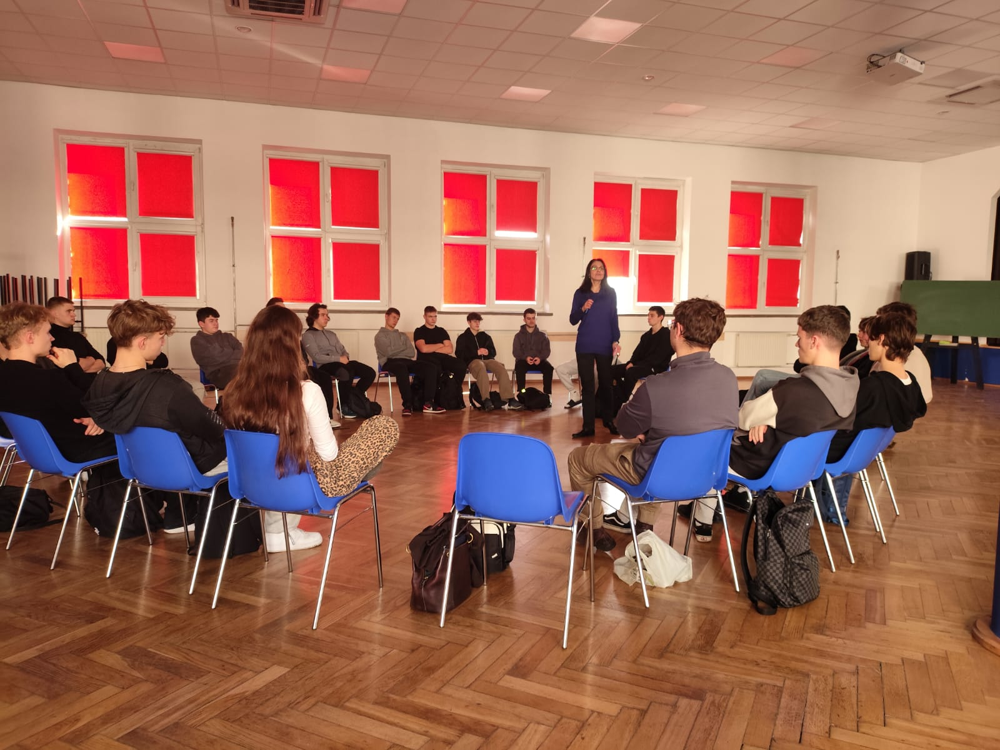
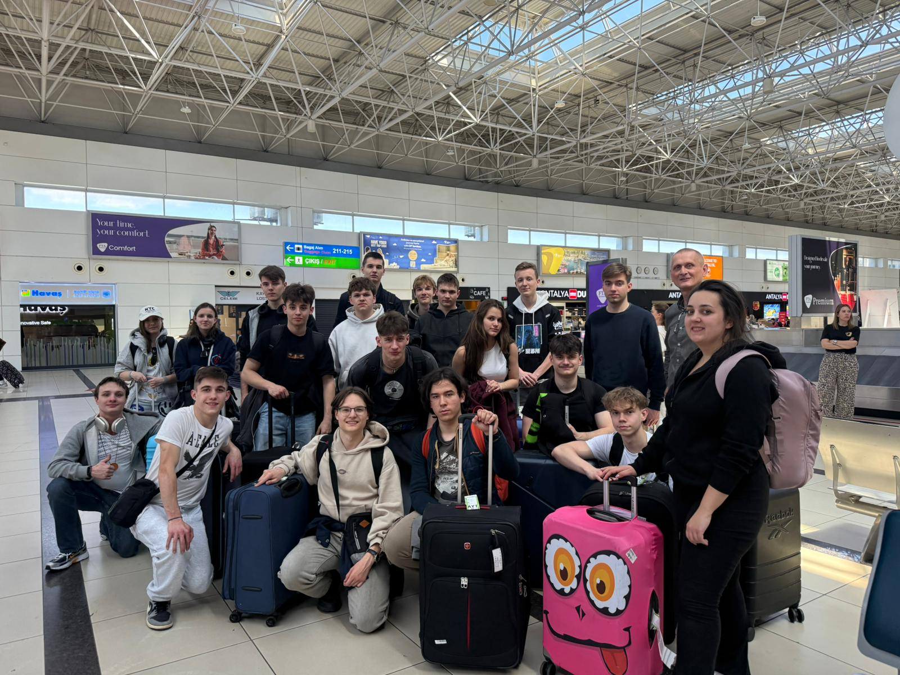
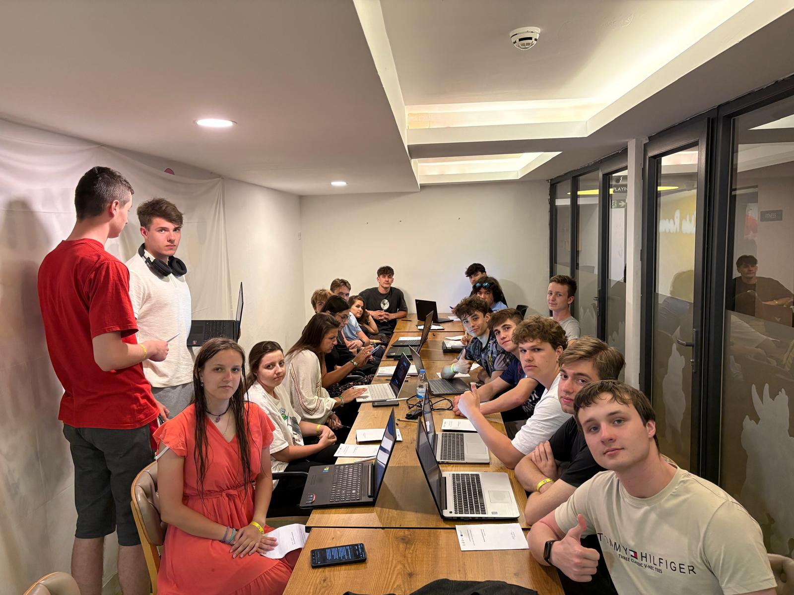

Przygotowania
Kulturowo-pedagogiczne i językowe szkolenia przed wyjazdem, przygotowujące uczniów do pracy w tureckim środowisku.
- Szkolenia językowe (angielski zawodowy)
- Warsztaty kulturowe — Turcja
- Przygotowanie organizacyjne
Zespół Szkół Elektronicznych w Rzeszowie
12 kwietnia – 2 maja 2026 r.

W ramach projektu UE Erasmus+ nr 2025-1-PL01-KA121-VET-000313536, 22 uczniów naszej szkoły uczestniczyło w praktykach zawodowych z zakresu informatyki, elektroniki i automatyki w Turcji.
Praktyki zostały zorganizowane we współpracy z partnerską szkołą Manavgat Borsa İstanbul Mesleki ve Teknik Anadolu Lisesi i odbywały się w 9 tureckich firmach działających w branży informatycznej, elektronicznej oraz automatycznej.
Staż realizowano w Manavgat, w regionie Antalya, w okresie od 12.04.2026 do 2.05.2026 r., a udział w projekcie obejmował także przygotowanie kulturowo-pedagogiczne, językowe i organizacyjne oraz potwierdzenie efektów uczenia się dokumentami Europass Mobility.

Program łączy rozwój zawodowy z osobistym — każdy uczestnik wraca z konkretnymi umiejętnościami i nowym spojrzeniem na swoją ścieżkę kariery.
Praca w 9 tureckich zakładach IT, elektroniki i automatyki. Certyfikaty i dokumenty Europass Mobility uznawane w całej UE.
Zwiększenie mobilności uczniów na arenie europejskiej i rozszerzenie horyzontów zawodowych.
Komunikacja zawodowa w języku angielskim w codziennym, realnym środowisku pracy.
Budowanie kontaktów z rówieśnikami i pracodawcami z Turcji, otwieranie drzwi do przyszłej współpracy.
Wzrost samodzielności i pewności siebie poprzez funkcjonowanie w nowym kraju i środowisku kulturowym.
Uczniowie zdobywają praktyczne doświadczenie w międzynarodowym środowisku pracy, które wzmacnia ich CV i ułatwia wejście na rynek pracy po ukończeniu szkoły.

Kulturowo-pedagogiczne i językowe szkolenia przed wyjazdem, przygotowujące uczniów do pracy w tureckim środowisku.

Trzy tygodnie pracy w 9 tureckich firmach — z certyfikatami i dokumentami Europass Mobility honorowanymi w całej UE.

Sporządzanie raportów, ocena kompetencji oraz upowszechnianie rezultatów projektu w szkole i regionie.

Pobyt w Turcji obejmował również wspólne wyjścia, zwiedzanie okolicy oraz czas na integrację uczestników, co pozwalało lepiej poznać kulturę regionu Antalya i budować relacje w grupie.
Codzienne aktywności, czas wolny i zadania praktyczne podczas pobytu w regionie Manavgat / Antalya.